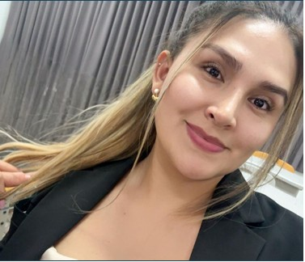

Equipo Fundador

Carlos Manuel
CEO — Dirección general y alianzas institucionales.

José Moreno
CTO — Desarrollo técnico e innovación en IA.

Anaceli Samamé
Operaciones — Logística y soporte en campo.

Luis Salazar
Marketing — Comunicación, difusión y branding.